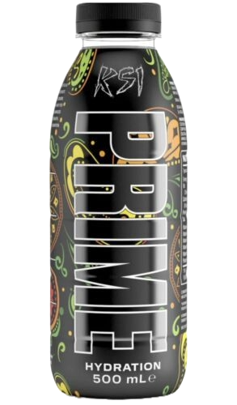

It's not just a drink!
It's Prime
PRIME was developed to fill the void where great taste meets function. With bold, thirst-quenching flavors to help you refresh, replenish, and refuel.
Learn more

PRIME was developed to fill the void where great taste meets function. With bold, thirst-quenching flavors to help you refresh, replenish, and refuel.
Learn more